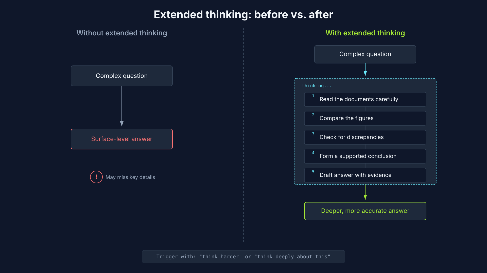
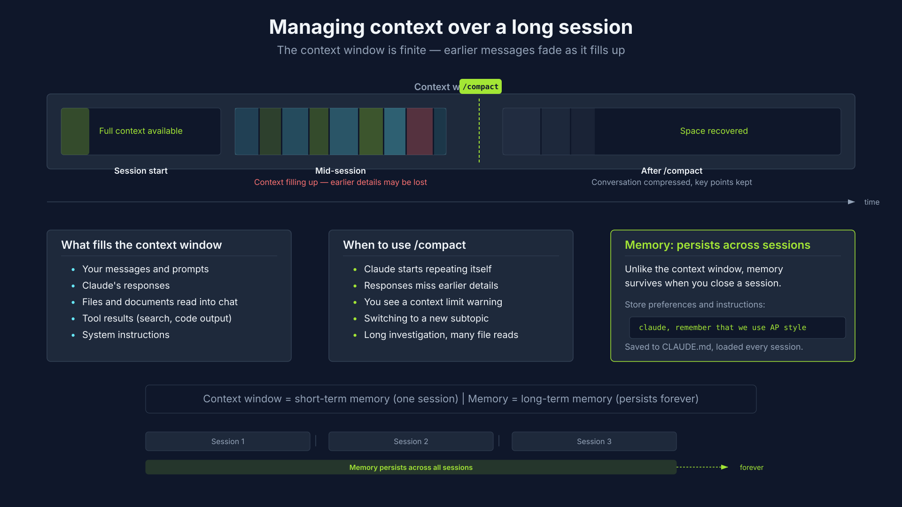
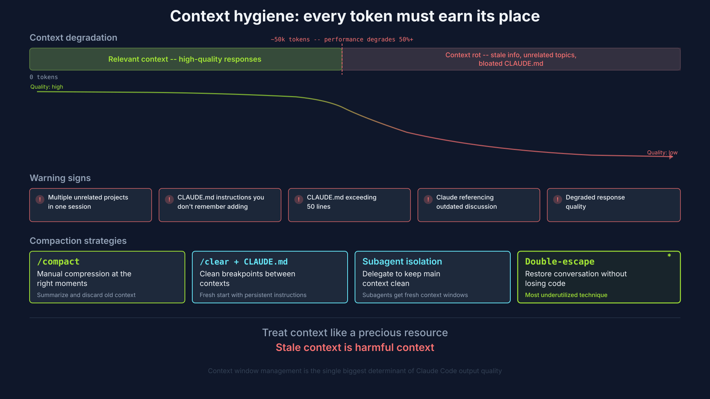
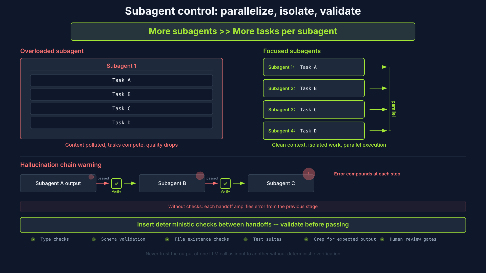
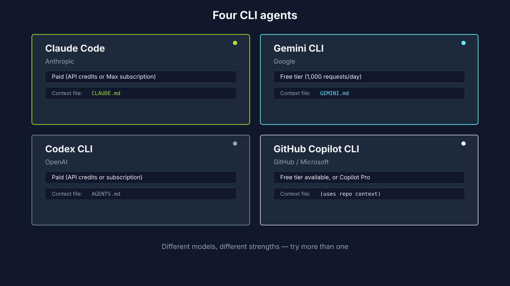
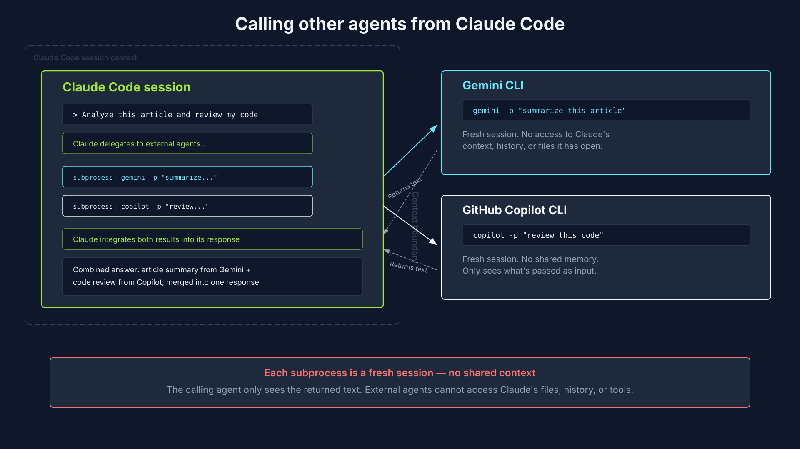
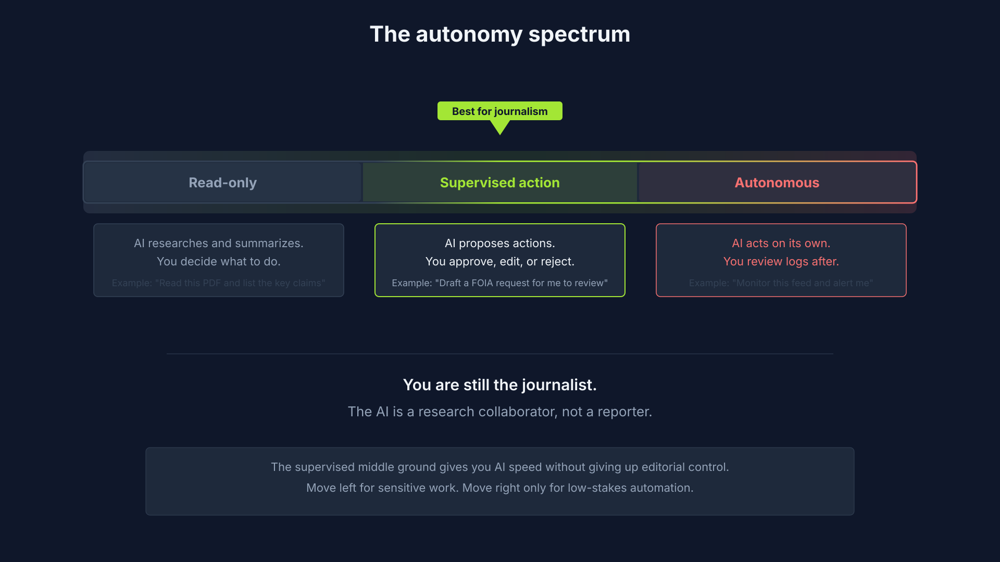
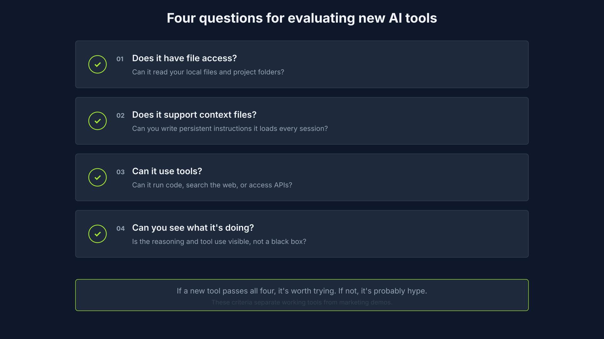
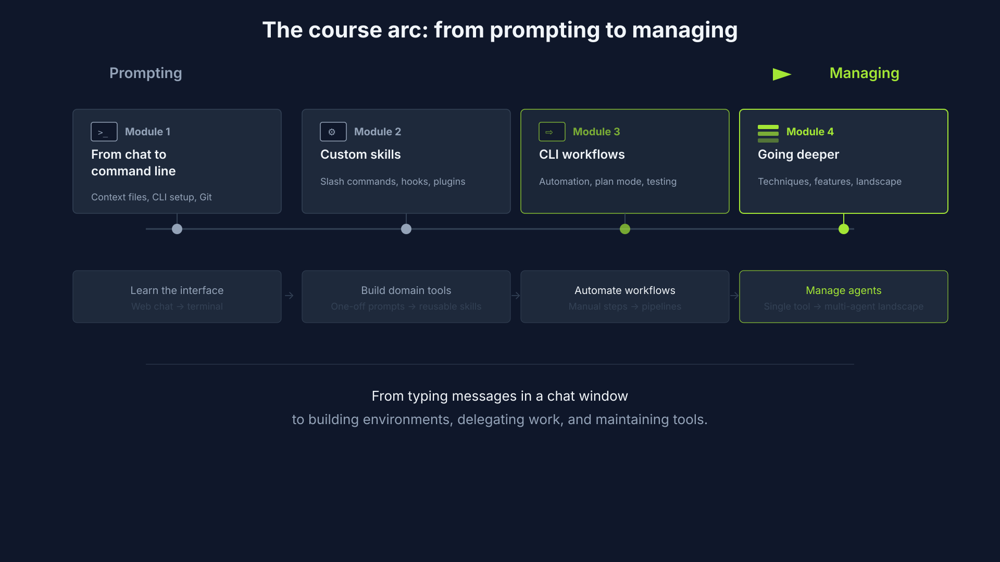

Effort and context · sub-agents · cross-model review · remote control
Advanced prompt engineering for journalists · Knight Center for Journalism at UT Austin
Joe Amditis — Center for Cooperative Media, Montclair State University
/effort levels and what they cost · the context window as a budget · /compact with and without instructions · Ctrl+O and your saved transcripts
/effort sets reasoning depth for the current sessionlow — fast, light reasoningmedium — defaulthigh — deeper reasoningmax — maximum capability, deepest reasoningauto — model decides per stepThe more compute the tool throws at your problem, the more it costs you.

The window went 200k → 1M, but response quality starts degrading past 20–30% of the window used.
Once you cross the old 200k line, you'll see it in the outputs — repetition, dropped details, threads from unrelated parts of the session.
Pro tip: put token percent in your status line so you can see it.

Run it when you're climbing past 20–30% used, or when you notice the model repeating or missing details.
The model writes a summary of what you've done, keeps it in context, and drops everything else.
Tell the compactor what matters. Useful on long-running work where a naive summary drops the part you care about.
That hint reshapes the summary toward your current task.
.jsonl as you workShort-term. Scoped to the current session. Fills up as you work, compacted or dropped when it gets full.
Long-term. Loaded every session. The persistent layer you build up for a project or beat.
You manage context. You build memory.
Keeping conversations under the 40% load line · sub-agents for fresh context · the agent-telephone problem · double-escape to rewind

/compact — keep this conversation, free space/clear — wipe the window, reload CLAUDE.md/quit — close and start a fresh session
EscOnce you've run /compact, you can't rewind past that compaction.
The pre-compact exchanges are gone as discrete turns — only the summary remains.
Yet another reason to keep conversations per-task, not stacked.
GitHub Copilot CLI and Codex CLI as sub-agents · the -p flag pattern · context isolation · second opinions before a PR
Same input, two different models, two different blind spots. Together they catch more than either one alone.

-p flag: non-interactive modeFrom inside your Claude Code session, ask Claude to shell out to another CLI agent.
-p = non-interactive prompt. One turn, no session, done.
npm install -g @github/copilotnpm install -g @openai/codexnpm install -g @google/gemini-cliAuth inherits from existing logins — already signed into GitHub? Copilot is signed in.

Your main session. Ran the feature work. Missed a loop-fix issue and a gating bug.
Flagged same-day rerun collisions, a branch that runs unconditionally, and some dead code.
Sharper critique. Two high-severity findings Copilot missed: the PR loop wasn't actually fixed, and gating blocked non-video updates.
/code-review plugin is also worth running — install the official Claude Code plugins to unlock it. But nothing replaces the cross-model read.
/remote-control for your session from anywhere · the role you're actually playing · four questions for picking a tool · course send-off
/remote-control works/session) so it's easy to find/remote-control — session flags as activeAnthropic-only for now. Codex and Gemini don't ship an equivalent.
Talk to computers, talk to people. The machine runs in the background, assisting — the reporting and writing stay with you.


Long documents, complex multi-step reasoning, or structured reliable output? Pick the tool that fits. Not the one you saw a video about.

Not as a shortcut. Not to cheat. As tools in the background that free you up to listen, engage, report, and edit — so the work you produce is still worth producing.
See you in the forums for the final project.